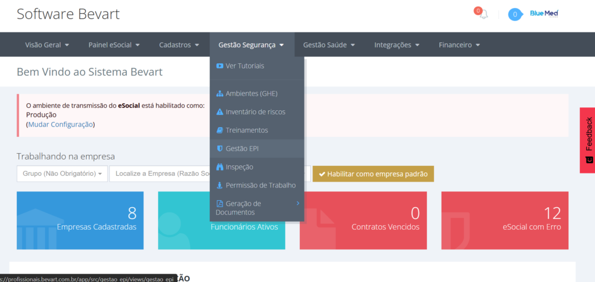
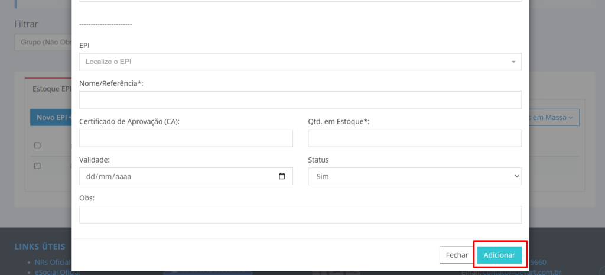
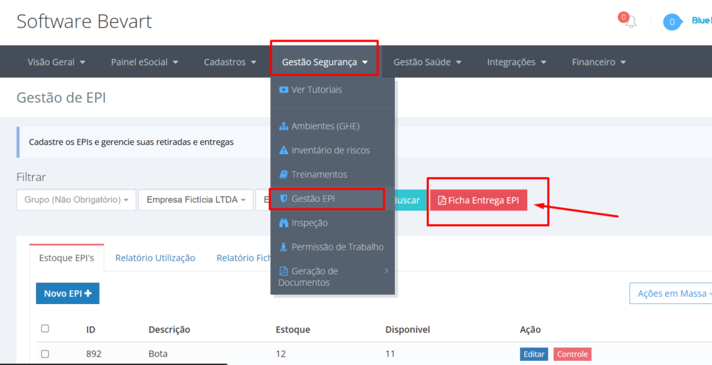
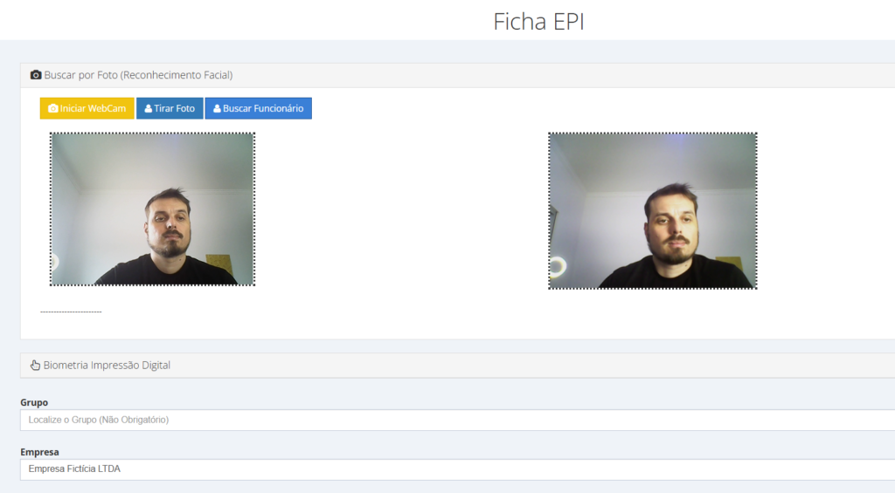
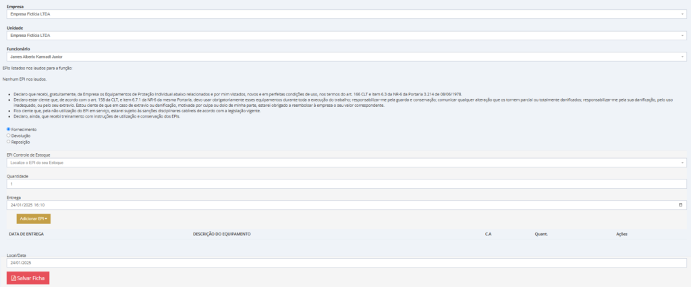
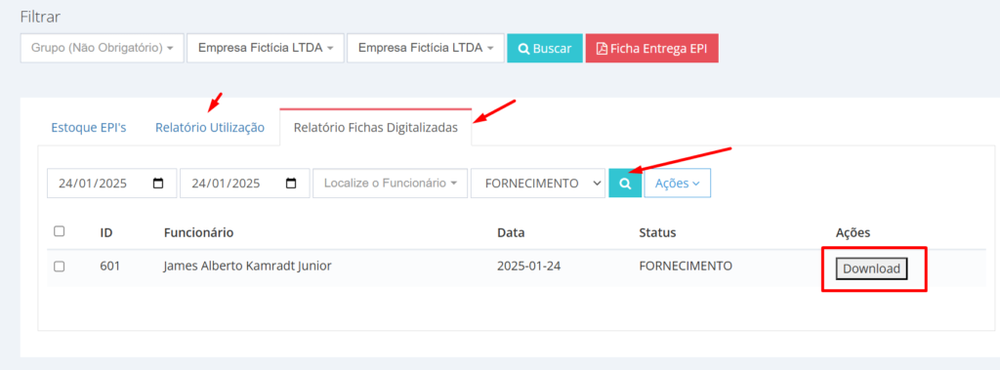

Estoque de EPI e ficha de entrega com biometria facial
Cadastrar o EPI, dar baixa no estoque e emitir a ficha assinada — sem papel, sem planilha paralela e com a foto do recebimento anexada ao PDF.
O essencial em 30 segundos
- O EPI é cadastrado uma vez com quantidade, validade e observações; cada entrega ou devolução move o estoque sozinha.
- A ficha é assinada por biometria facial — a foto do momento entra no PDF, o que importa na hora de comprovar entrega.
- O PDF fica na nuvem e no relatório do módulo, disponível para auditoria.
Ficha de EPI em papel tem dois destinos previsíveis: a gaveta e o sumiço. E o problema aparece justamente quando ela é necessária — no acidente, na reclamatória, na fiscalização — porque a entrega do equipamento só vale se puder ser comprovada.
O caminho abaixo mostra o ciclo completo dentro do sistema: cadastro do item, entrega com assinatura biométrica e baixa automática de estoque.
1. Cadastrar o EPI no estoque
Acesse Gestão Segurança → Gestão EPI.

Clique em Novo EPI e escolha o item no banco de dados interno do sistema — protetor auditivo, luva, capacete. Depois preencha:
- Quantidade disponível em estoque;
- Data de validade, conferida no certificado do equipamento;
- Observações, como orientação de uso ou onde o item fica guardado.

2. Entregar com assinatura biométrica
Com o item em estoque, abra a Ficha de Entrega de EPI.

Por que biometria facial e não digital
Na construção civil e em atividades com abrasivos, a impressão digital simplesmente não lê — mão calejada, suja ou com desgaste derruba a taxa de reconhecimento. O rosto resolve isso, com equipamento barato: uma webcam comum basta.
O ganho maior, porém, é probatório: a foto capturada na validação entra no PDF da ficha. Em auditoria ou verificação posterior, não é a assinatura rabiscada que sustenta a entrega — é o registro de quem estava ali naquele momento.

Registrando a movimentação
- Selecione o funcionário (pela foto ou pela busca).
- Escolha o item no estoque.
- Indique o tipo de movimentação: fornecimento, devolução ou reposição.
- Colha a assinatura — em tablet ou computador.
- Clique em Salvar Ficha.

Ficha que não some e estoque que não mente
Cada entrega gera PDF assinado com foto e move o saldo do item no mesmo instante — sem controle paralelo em planilha.
Criar conta grátis3. O estoque se atualiza sozinho
A movimentação corrige o saldo na hora: 50 unidades, uma entregue, 49 em estoque. Devolveu o protetor auditivo, volta para 50. É simples de descrever e é exatamente onde o controle em planilha falha — porque depende de alguém lembrar de atualizar duas coisas.
4. Onde encontrar as fichas depois
O PDF é salvo na nuvem e fica anexado ao relatório e ao banco de dados do sistema. Os administradores consultam pelo relatório, no mesmo menu Gestão Segurança → Gestão EPI.

A ficha comprova a entrega, não a eficácia. Para o EPI cumprir o papel dele no plano de ação do PGR, o CA precisa estar válido e adequado ao risco descrito no inventário. Estoque organizado com CA vencido continua sendo não conformidade.
O que muda na rotina
- Sem papel: a ficha nasce digital e assinada.
- Prova melhor: foto do recebimento dentro do documento.
- Estoque confiável: saldo movimentado pela própria entrega.
- Consulta rápida: relatório por funcionário e por item para auditoria.
Perguntas frequentes
Preciso de leitor biométrico caro?
Para o reconhecimento facial, uma webcam comum resolve. O sistema também aceita leitura de impressão digital, mas em setores como a construção civil o rosto costuma ser mais confiável.
A foto fica dentro da ficha?
Sim. A imagem capturada no momento da validação é incluída automaticamente no PDF da ficha de entrega, o que reforça a autenticidade do registro em auditoria ou verificação futura.
E quando o funcionário devolve o EPI?
A devolução é um tipo de movimentação da mesma ficha. Ao registrá-la, o item volta para o saldo do estoque automaticamente.
Onde ficam guardadas as fichas emitidas?
O PDF é salvo na nuvem e vinculado ao relatório do módulo de EPI, acessível pelos administradores em Gestão Segurança → Gestão EPI.